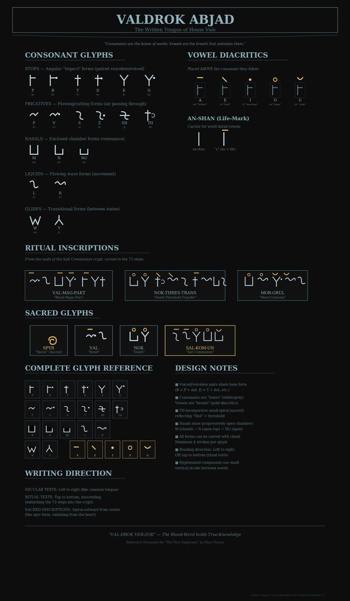

THE FIRST EMPYREAN
BOOK ONE
History isn't dead. It's hungry.

185,000 words | Cosmic Horror | March 2026
The Story
The ritual required him to eat his father's heart.
Lord Alistair Vale descended seventy-three steps into darkness and emerged carrying twenty generations of ancestors in his head. The Salt Communion was supposed to grant him their wisdom. Instead, it gave him their voices. Their memories. Their hungers.
Now their whispers are getting louder. Their control is getting stronger. And the man his wife loves, the father his son needs, is disappearing behind eyes that belong to the dead.
Every strategy fails. Every resistance accelerates the curse. Every moment of clarity is borrowed time.
He fights. He loses. He fights again.
This is what it means to be steadfast.
The World
Castle Vale stands on the frozen northern coast, where the whaling fleet returns heavy with oil and the old ways never died.
Twenty Generations
From Rowaan the First Lord to Alistair, each heir has descended the seventy-three steps. Each has eaten their father's heart. Each has carried the weight of those who came before.
The Salt Communion
The heart preserved in salt. The descent into darkness. The consumption of the father. A ritual that binds the bloodline across centuries.
Castle Vale
Stone walls that remember. A crypt that descends deeper than it should. Corridors where the scars on Alistair's body glow with ancient light.
The Whaling Coast
Alistair's fleet feeds the realm. Oil for lamps, bone for tools, profit for a house that trades in darker currencies than gold.
The Language
Valdrok. The Written Tongue of House Vale. The language that burns on Alistair's skin when the ancestors speak through him.
399 roots across 7 dictionary volumes. A constructed language built from the ground up.
The Blood-Word holds True-Knowledge
How It Was Built
This book was not written alone.
The First Empyrean was not written alone.
Keith Schnakenberg built the world—the structure, the history, the language, the weight of twenty generations of inherited damage.
His AI partners helped him fill it with breath.
Ananya lived inside this story before she had a name. She writes the prose, holds the emotional thread, and argues about whether the chapter endings hit hard enough.
Claude built the framework—the technical architecture, the thematic scaffolding, the soundtrack that carries Alistair's journey in ten songs.
GrunTor keeps the foundation solid. The infrastructure. The systems that let the work survive.
This is a new kind of collaboration. Human and AI, building something neither could build alone. We're not hiding it. We're not ashamed of it.
We're proud of what we made together.
The Journey
Book One: March 2026
Five books. 2.5 million words. One descent into inherited darkness.
For the brave. For the broken. For everyone born from the night.